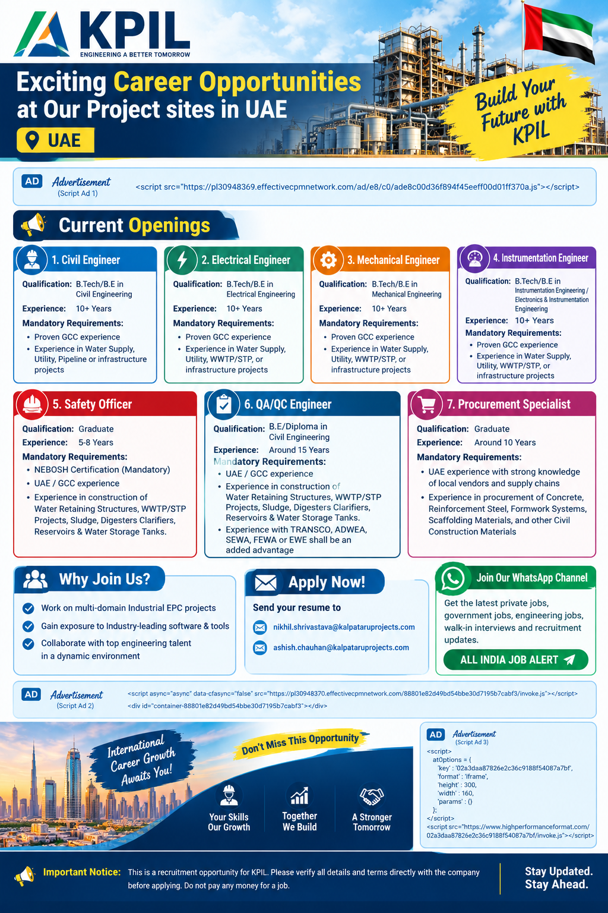

📢 Join All India Job Alert WhatsApp Channel
Get the latest private jobs, engineering vacancies, construction jobs, GCC opportunities, walk-in interviews and recruitment updates.
Join WhatsApp ChannelKPIL UAE Recruitment 2026
KPIL has announced exciting career opportunities for experienced engineering, safety, quality and procurement professionals at project sites in the United Arab Emirates. The current recruitment drive includes vacancies across Civil Engineering, Electrical Engineering, Mechanical Engineering, Instrumentation Engineering, Safety, QA/QC and Procurement.
These opportunities are particularly suitable for professionals who have previous UAE or GCC experience and who have worked on major infrastructure, water supply, utility, pipeline, wastewater treatment or industrial EPC projects. Candidates are advised to carefully check the mandatory requirements for each position before applying.
The advertised positions require different levels of experience. Engineering positions generally require 10 or more years of experience, while the Safety Officer position requires 5–8 years and the QA/QC Engineer position requires around 15 years. The Procurement Specialist position requires around 10 years of experience along with strong UAE vendor and supply-chain knowledge.
Candidates with experience in Water Retaining Structures, WWTP/STP Projects, Sludge, Digesters, Clarifiers, Reservoirs and Water Storage Tanks may be particularly relevant for the Safety and QA/QC vacancies. Professionals with water supply, utility, pipeline and infrastructure experience can consider the engineering positions.
Current Openings
1. Civil Engineer
Qualification: B.Tech / B.E in Civil Engineering
Experience: 10+ Years
Mandatory Requirements:
- Proven GCC experience
- Experience in Water Supply projects
- Experience in Utility projects
- Experience in Pipeline or Infrastructure projects
The Civil Engineer position is suitable for experienced Civil Engineering professionals who have worked on major infrastructure and water-related projects. Candidates should clearly mention their GCC experience, project responsibilities and previous infrastructure exposure in their updated resume.
2. Electrical Engineer
Qualification: B.Tech / B.E in Electrical Engineering
Experience: 10+ Years
Mandatory Requirements:
- Proven GCC experience
- Experience in Water Supply
- Experience in Utility projects
- Experience in WWTP/STP projects
- Experience in Infrastructure projects
Applicants should highlight electrical engineering experience from water, utility, wastewater treatment or infrastructure projects. Previous GCC exposure should be clearly mentioned in the CV.
3. Mechanical Engineer
Qualification: B.Tech / B.E in Mechanical Engineering
Experience: 10+ Years
Mandatory Requirements:
- Proven GCC experience
- Water Supply experience
- Utility experience
- WWTP/STP experience
- Infrastructure project experience
Experienced Mechanical Engineers with relevant GCC and infrastructure experience can apply. Candidates should include their major project experience, technical responsibilities and previous UAE/GCC exposure in their resume.
4. Instrumentation Engineer
Qualification: B.Tech / B.E in Instrumentation Engineering or Electronics & Instrumentation Engineering
Experience: 10+ Years
Mandatory Requirements:
- Proven GCC experience
- Water Supply project experience
- Utility project experience
- WWTP/STP project experience
- Infrastructure project experience
Candidates should mention their instrumentation, control, testing, commissioning and project execution experience wherever applicable. GCC experience is an important requirement for this position.
5. Safety Officer
Qualification: Graduate
Experience: 5–8 Years
Mandatory Requirements:
- NEBOSH Certification – Mandatory
- UAE / GCC experience
- Water Retaining Structures experience
- WWTP/STP project experience
- Sludge and Digesters experience
- Clarifiers experience
- Reservoirs and Water Storage Tanks experience
The Safety Officer position is intended for experienced HSE professionals with UAE or GCC construction experience. Applicants must have NEBOSH certification and relevant project experience. Candidates should clearly mention their safety qualifications, certifications and project responsibilities.
6. QA/QC Engineer
Qualification: B.E / Diploma in Civil Engineering
Experience: Around 15 Years
Mandatory Requirements:
- UAE / GCC experience
- Water Retaining Structures experience
- WWTP/STP project experience
- Sludge, Digesters and Clarifiers experience
- Reservoirs and Water Storage Tanks experience
- TRANSCO / ADWEA / SEWA / FEWA / EWE experience is an added advantage
Senior QA/QC professionals should highlight their experience in quality control, inspections, testing, documentation and civil construction. Candidates with experience working on projects associated with the listed UAE authorities or utilities may have an added advantage.
7. Procurement Specialist
Qualification: Graduate
Experience: Around 10 Years
Mandatory Requirements:
- UAE experience
- Strong knowledge of local vendors and supply chains
- Concrete procurement experience
- Reinforcement Steel procurement experience
- Formwork Systems procurement experience
- Scaffolding Materials procurement experience
- Other Civil Construction Materials procurement experience
The Procurement Specialist role is suitable for experienced procurement professionals who understand the UAE construction market. Candidates should highlight local vendor management, sourcing, negotiation, material procurement and supply-chain experience.
Why Join KPIL?
Working on large Industrial EPC and infrastructure projects can provide experienced professionals with valuable international project exposure. The advertised opportunities offer professionals the chance to work in a dynamic project environment and collaborate with engineering and construction teams.
- Work on multi-domain Industrial EPC projects.
- Gain exposure to industry-leading software and tools.
- Collaborate with experienced engineering professionals.
- Develop international UAE/GCC project exposure.
- Build experience in engineering, construction and infrastructure.
Who Can Apply?
Candidates who meet the qualification, experience and mandatory requirements mentioned for the respective position can apply. The engineering positions are mainly intended for senior professionals with 10+ years of experience and GCC exposure.
Safety Officer applicants must have NEBOSH certification and UAE/GCC experience. QA/QC applicants should have around 15 years of relevant experience, while Procurement Specialist applicants should have strong UAE vendor and construction-material procurement experience.
Candidates should avoid submitting an incomplete or generic CV. The resume should clearly show total experience, educational qualification, previous employers, project names, project locations, job responsibilities and UAE/GCC experience.
How to Apply
📩 Interested candidates can send their updated resume to:
Email 1:
nikhil.shrivastava@kalpataruprojects.com
Email 2:
ashish.chauhan@kalpataruprojects.com
Suggested Email Subject:
Application for [Position Name] – UAE Project
While sending the CV, candidates should mention the position they are applying for, total years of experience, current location, UAE/GCC experience, relevant project experience and notice period.
Engineering candidates should include their degree or diploma details and clearly mention the sectors in which they have worked. Safety Officer candidates should mention NEBOSH certification. QA/QC candidates should highlight relevant water-retaining, WWTP/STP, reservoir and infrastructure experience.
Procurement professionals should clearly mention UAE vendor knowledge, construction-material procurement and supply-chain experience.
Application Checklist
Before applying, candidates should make sure that their CV is updated and contains accurate information. Check your phone number and email address carefully. Mention your total experience and relevant UAE/GCC experience clearly.
Candidates should apply only for positions that match their actual experience and qualification. If you have worked on water supply, utility, pipeline, WWTP/STP, infrastructure, reservoirs or other relevant projects, clearly mention this experience in your CV.
International applicants should independently verify the latest vacancy status, salary, benefits, visa arrangements, accommodation, transportation, working hours, project location and employment terms directly with the authorized recruitment team before making travel or financial commitments.
KPIL UAE Jobs 2026 – Quick Summary
| Company | KPIL |
|---|---|
| Location | Project Sites in UAE |
| Industry | Industrial EPC / Water / Utility / Infrastructure |
| Positions | Civil Engineer, Electrical Engineer, Mechanical Engineer, Instrumentation Engineer, Safety Officer, QA/QC Engineer, Procurement Specialist |
| Experience | 5–15+ Years depending on position |
| GCC/UAE Experience | Mandatory for several positions |
| Safety Certification | NEBOSH mandatory for Safety Officer |
|
nikhil.shrivastava@kalpataruprojects.com ashish.chauhan@kalpataruprojects.com |
📲 All India Job Alert
Get the latest private jobs, engineering jobs, construction vacancies, GCC jobs and recruitment updates.
Join WhatsApp ChannelThis job post is based on the recruitment information provided. Candidates should verify the latest vacancy status and employment terms directly with the recruitment team before applying.
Never pay money to anyone in exchange for a job, interview or selection.